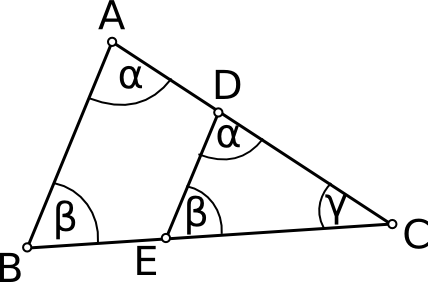
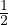

Kolmnurk

Sarnasteks kolmnurkadeks nimetatakse kolmnurki, mille küljed on võrdelised ja
mille nurgad on võrdsed.
Kolmnurga omadused:
- kolmnurga nurkade summa on alati 180∘
- kolmnurga pindala S =  ⋅ a ⋅ h, kus a on alus ja h on kõrgus
- võrdkülgse kolmnurga kõik nurgad on 60∘
- võrdhaarse kolmnurga alusnurgad on võrdsed
- hüpotenuus on alati pikem kaatetitest
- kolmnurga mediaanide ristumiskohas on kolmnurga raskuskese
- täisnurkse kolmnurga korral a2 + b2 = c2